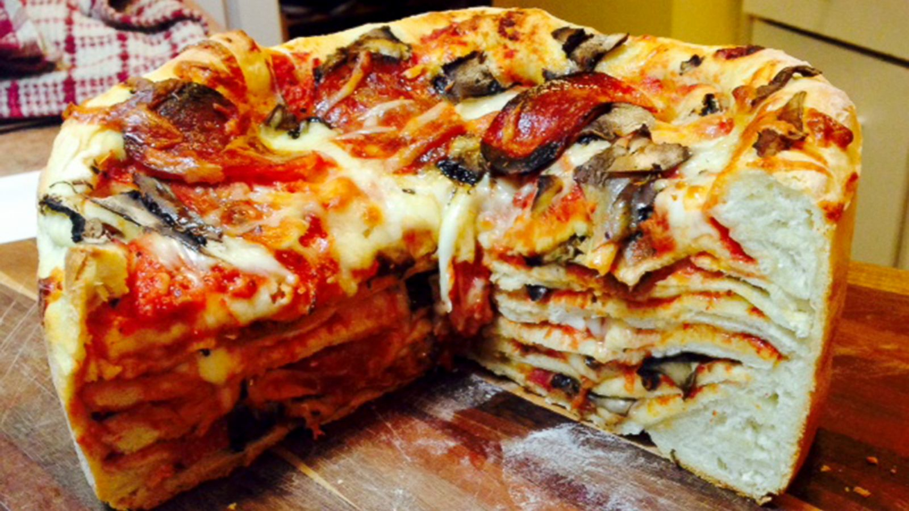

Recipe:
Ingredients:
- 1 pizza crust
- 1 cup tomato sauce
- 1 cup mozzarella cheese
- 1/2 cup pepperoni slices
- 1/2 cup sliced mushrooms
- 1/4 cup sliced olives
Instructions:
- Preheat your oven to 425°F (220°C).
- Roll out the pizza crust on a baking sheet.
- Spread tomato sauce evenly over the crust.
- Sprinkle mozzarella cheese, pepperoni, mushrooms, and olives on top.
- Bake in the oven for 15-20 minutes or until the crust is golden and the cheese is bubbly.
- Remove from the oven, slice, and enjoy your delicious Pizza Cake!